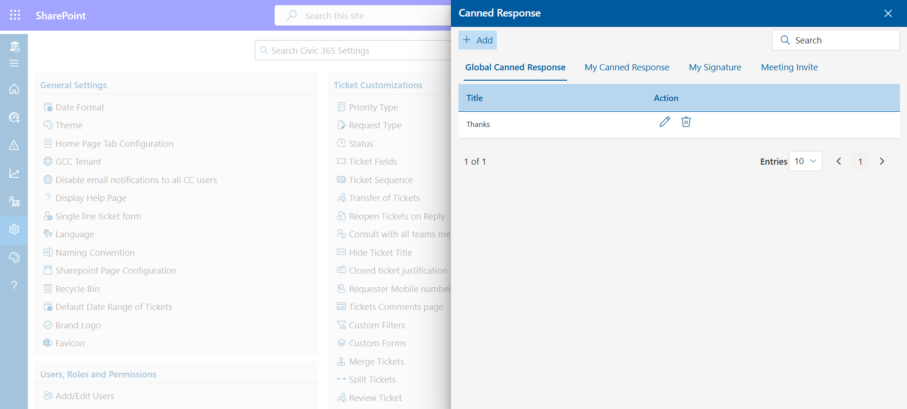
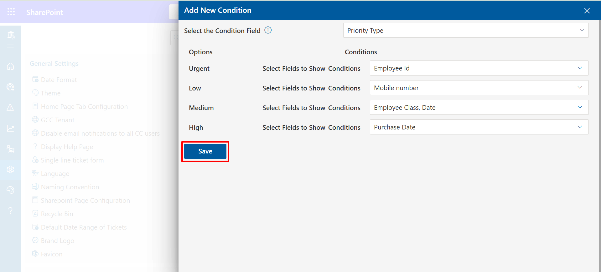
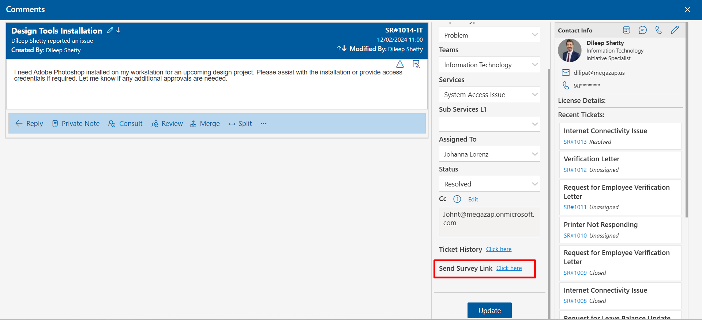

Features
Civic application features could be customized.
- Go to the Settings, click Canned Responses under Features.
-
Click +Add, this displays Add Canned Response.
-
Enter Canned Response Title and Canned Message.
-
Click on Save button.

Canned Responses
Canned response settings are available for all admin, supervisor, and agents in the settings page. These responses can be viewed and used during a ticket raising in the comment page. To use these responses, click on the reply option and then on the canned response, the panel will open, select your response, and click on the add button.
There are 3 types of canned response.
Global canned response: These are public responses; all team members can create and use them freely.
My canned response: These responses are individual or user specific, one who has created, can view and use during a ticket raising in the comment page.
My signature: All team members can set their own default signature. The default signature comes up on the comment page during ticket raising. These responses or signatures are individual-specific.
To create the Canned Responses, follow the below steps:
Applicable for global canned response, my canned response, and my signature.
Delete: Click the delete icon, this displays a dialog box. Click Yes button.
Edit: You can edit Title and Message Body. Click the edit icon, this displays Edit Canned Response. Update the Title and/or Message Body and click on Update button.
Column Indexing
The Column Indexing feature helps optimize system performance when handling a large number of tickets. By enabling indexing on selected columns, it enhances the efficiency of column filters, ensuring faster data retrieval and more reliable results. This feature is particularly useful for improving search and filter performance in high-volume environments.

Customer Satisfaction
A survey link notification is sent to the ticket requester once their ticket has been resolved or closed. From here survey link notification can be set either for resolved or closed tickets or sent manually.
If Allow agent to send a survey link is selected, Click here link will show when ticket status is set as resolved in the properties panel (comment page), the ticket assignee could send survey notification to the requester by clicking on it.
Delete: Click the delete icon, this displays a dialog box. Click Yes button.
Edit: You can edit Survey Name, Point scale, Thank you page and survey link in emails.
-
Click on + New Column, this displays New Column page.
-
Select the check box from the category.
In the category, you have two options Ticket Description and Ticket Property. If you select ticket description, details will be visible on the comment page and If you select ticket property, details will be visible on the home page.
-
Enter column name, select type and active. Then Click on Save button.

-
Condition Based Column : In condition based column user can define the condition to show/hide the fields in the add new ticket page on the basis of option which are pre-defined in the choice type column.
-
Click on + Condition button
-
You can dynamically show and hide ticket form fields based on one of the choice fields. Click on Save button.

Custom Column
From here you can add, edit and delete the custom column.
To add new column, follow the below steps:
-
Enter the Name and Description.
-
Select Civic Hours
-
Click Submit button.
Business Hours
From here, the admin can add, edit and delete business hours.
To add business hours, follow the below steps:
-
There are four tabs available in the Column Settings panel: Unassigned, Team Tickets, Team Closed,Team Resolved and Report.
-
With the use of this setting, you can rearrange the columns in the desired order by dragging the columns.
-
Select the tab under which you want the columns to appear . Now tick the box next to the column you want to display. Click on save button.

-
Certain column that you have selected under the Team Tickets tab would appear on the Home Page.
Column Settings
From Column Setting admin can hide , show and sort columns.
Define SLA Policies
An SLA policy (service level agreement) lets you set standards of performance. They're like a target, or a deadline, within which your support team is expected to resolve tickets. If any of the policies are breached, a email notification would be escalate to the team.
By default SLA policies are disabled, you can enable it by clicking Enable SLA toggle switch.
SLA Calculation : Two types are displayed below: Initial Response SLA and Resolve Time SLA . Choose the desired option from the checkbox now and click on save button .
Apply SLA Policies
The defined SLA policies can be applied from here.
Follow these steps to apply SLA policies
-
First, click the Configure button next to the Apply SLA Policies.
-
Apply SLA Policies panel will open . There are four dropdown menus: Teams, Services, Request Type, and SLA Policy.
-
Click the save button after making your selections from the dropdown menus.
- Click on Add Button to create new Workflow .
Approver-Workflow
Click on Configure button.
The Approval Workflow feature in Civic 365 allows users to create a customized approval process for different types of requests or tickets. For example, if an employee requests time off, their manager may need to approve the request before it can be finalized. With the approval workflow, the manager can be automatically notified of the request and prompted to review and approve it.

Approval Workflow Based on Teams and Services: You can configure workflows based on selected teams, request types, services, and sub-services. When a ticket is created that matches these conditions, the approval process is triggered. Additionally, you can decide whether this should occur on ticket creation or status update.
Rules & Automation
Click on Configure button.
In ‘Rule & Automation’ feature, enabling seamless client connectivity and effortless ticket management based on priority. With its intuitive interface, you can create rules, auto-generate tickets, assign tickets of VIPs to specific agents, auto close, auto escalate, and route the tickets virtually with unlimited conditions to cater for your specific business needs. Thus, saving valuable time and effort. Additionally, our ‘Except if’ feature offers the ability to exclude specific actions as needed.
-
First, click the Configure button next to the Dashboard Settings.
-
Dashboard Settings panel will open . There are four tabs: Row 1, Row 2, Row 3, and Row 4.
-
Select the checkbox option of charts which you want to show in the dashboard row.
Dashboard Settings
From here you can customize the chart which you want to show in the dashboard for each row.
Chatbot Bubble 365 Settings
Click on Configure button.
To activate this function, simply switch the toggle on.
You can establish Microsoft Teams for your Civic support groups. The bot will dispatch push notifications to the relevant teams/groups each time a new ticket is Created.
Through the use of the refresh function, team members will be added to or removed from Microsoft Teams based on the settings defined for each team or group.
Knowledgebase
A knowledge base serves as a hub storing articles and FAQs for users to access before raising any issues. It's designed to provide information and solutions, allowing users to self-assist and find answers to common queries without needing direct support. Encouraging users to explore the knowledge base before seeking help can reduce repetitive inquiries and empower them to resolve issues independently.
Click on Configure button.
To activate the knowledge base feature, toggle it on
Click on the bulb icon in side navigation bar to open the knowledgebase.
In
knowledgebase you can create articles under the particluar team section.
User
can also provide feedback on the published articles along with star ratings.
Incident Module
You have the ability to create ticket groups, where responding to one ticket will have the same effect on all tickets within that group.
Configure different mailboxes for different team
When the toggle is activated, you can configure distinct mailboxes for various Civic365 teams. Any ticket that arrives in the IT mailbox will automatically be assigned to the IT team.
Service Entitlement
In this section, users are added and their entitlement status, start date, and end date are assigned based on the Services and Sub Services. In order to alert users that a request has been made by an expired requester, his requests will be marked with a black background whenever his status changes to expired. The same status is also displayed in the requester's details.
Enable MS Teams live chat integration
Enabling this toggle allows for Microsoft Teams live chat integration to be enabled and utilized.
Enable Archival of Ticket
It operates similarly to archiving, but in this case, you can designate a specific number of days for ticket deletion. Once that time has elapsed, the tickets will be automatically moved to the delete category.
Archive Tickets after days
You can set the selected number of days for ticket archiving. Once those days have passed, the tickets will automatically move to the archive.
Retain data in Civic 365 till days
All the data in Civic, will be retained upto the number of defined days, anything beyond retention policy days, data will deleted, however your retention policy defined in https://compliance.microsoft.com/ will have the priority in applying retention policies
- Go to the home page and click the Ticket ID to open the comment page.
-
On the comment page, click the Reply button, this displays pop-up to
write the comments.
- Click the Update button, this displays the Track Time popup.
-
Enter the time taken to resolve the ticket in minutes.
Time Tracking
Admin, supervisor, agent and User can track time on their tickets. They could add more time during the comment of the tickets.Time tracking are disabled (on default), you could enable it by clicking Enable Time Tracking toggle switch. You may also enable Make Time Tracking Mandatory also.
To use the time tracking, follow the below steps:
You can edit the time spent by clicking on the edit icon.
Enable comments in the ticket reply thread
When this feature is activated, replying to the requester includes the transmission of previous comments along with the response.